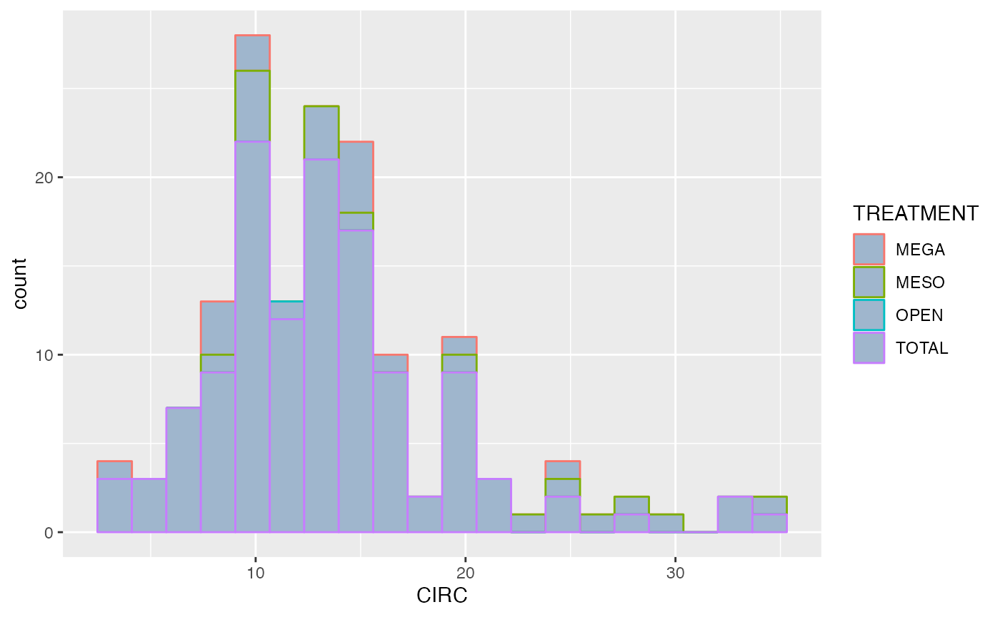

intro
visualization_in_R.RmdWhat is the purpose of this page?
This is a short tutorial on the basics of extracting, evaluating, and plotting in RStudio.
To do this best, we will be working with a practice dataset from The Ecological Society of America, from a paper entitled Plant and small-mammal responses to large-herbivore exclusion in an African savanna: five years of the UHURU experiment.
UHURU studies the effect of herbivores on various plants in Kenya.
This data set in particular focuses on the effects of different treatments on Acacia trees. These treatments are different areas of Kenya, where predation levels (and species) are diversified.
We will first call the file, based on the current directory. Then we
will use read.table() to access the file.
Using eval = TRUE displays the data.
getwd()
#> [1] "/Users/slimjims/Desktop/master/R-studio/portalData/vignettes"
## Provide file using a relative path ##
acacia_csv <- ("../data-raw/ACACIA_DREPANOLOBIUM_SURVEY.txt")
## add `na.strings = "dead"
acacia <- read.table(acacia_csv, header = TRUE, sep = "\t", fill = TRUE)Modifying a data frame
We’ve read the file into a variable in our environment.
What can we quickly find out from this data set?
There are a handful of commands that can help us out. Some personal favorites are:
head - read the first 10 lines from the first 10 columns
summary - does simple mathematical calculations on your
data set str - displays 10 values from each column, with
their data type View - creates a table in another tab
class - disaplys the data type
#head(acacia)
str(acacia)
#> 'data.frame': 157 obs. of 15 variables:
#> $ SURVEY : int 1 1 1 1 1 1 1 1 1 1 ...
#> $ YEAR : int 2012 2012 2012 2012 2012 2012 2012 2012 2012 2012 ...
#> $ SITE : chr "SOUTH" "SOUTH" "SOUTH" "SOUTH" ...
#> $ BLOCK : int 1 1 1 1 1 1 1 1 1 1 ...
#> $ TREATMENT: chr "TOTAL" "TOTAL" "TOTAL" "TOTAL" ...
#> $ PLOT : chr "S1TOTAL" "S1TOTAL" "S1TOTAL" "S1TOTAL" ...
#> $ ID : int 581 582 3111 3112 3113 3114 3115 3199 941 942 ...
#> $ HEIGHT : chr "2.25" "2.65" "1.5" "2.01" ...
#> $ AXIS1 : num 2.75 4.1 1.7 1.8 1.84 1.62 1.95 2 2.15 5.55 ...
#> $ AXIS2 : num 2.15 3.9 0.85 1.6 1.42 0.85 0.9 1.75 1.82 4.82 ...
#> $ CIRC : num 20 28 17 12 13 15 9 12.2 13 35 ...
#> $ FLOWERS : int 0 0 2 0 0 0 0 0 0 0 ...
#> $ BUDS : int 0 0 1 0 0 0 0 0 0 0 ...
#> $ FRUITS : int 10 150 50 75 20 0 0 25 0 50 ...
#> $ ANT : chr "CS" "TP" "TP" "CS" ...
#summary(acacia)After using the str() function, we see some small
oddities in our data set.
For example, Why is height a character vector? This can be an issue for some of the mathematical calculations.
Let’s try and find where the issue lies.
For Data Frames, we sort by Column, Then Row By using
df[Column,Row], where df refers to the name of
your data frame.
If you run df[,X], you will get the full list of values
from a Column.
We can also use $ as to sort through columns.
Since we know that some aspect of HEIGHT is leading to
this column being a chr type, let’s look at the full column
to see where the issue lies.
acacia$HEIGHT
#> [1] "2.25" "2.65" "1.5" "2.01" "1.75" "1.65" "1.2" "1.45" "1.87" "2.38"
#> [11] "2.58" "2.65" "2.35" "1.88" "2.32" "2.39" "2.2" "1.05" "2" "1.28"
#> [21] "dead" "1.4" "1.9" "1.75" "1.8" "2.7" "2.02" "1.9" "1.85" "1.65"
#> [31] "1.4" "2.5" "2.05" "2.26" "2.13" "1.8" "1.85" "1.5" "1.87" "1.58"
#> [41] "2.05" "1.75" "1.49" "1.28" "1.49" "1.07" "1.48" "1.25" "1.41" "1.6"
#> [51] "1.2" "1.49" "1.5" "1.65" "1.13" "1.25" "1.1" "2.2" "1.45" "1.6"
#> [61] "1.55" "1.5" "1.03" "2.14" "1.2" "1.05" "1.8" "1.2" "1.75" "1.45"
#> [71] "1.17" "2.15" "1.7" "1.98" "1.26" "1.11" "1.14" "1.26" "1.3" "1.29"
#> [81] "1.31" "1.15" "1.87" "1.47" "1.05" "2.1" "1.99" "1.42" "1.5" "1.06"
#> [91] "1.49" "1.8" "1.93" "1.2" "1.65" "1.52" "1.43" "1.25" "1.88" "1.03"
#> [101] "1.1" "1.4" "1.05" "1.18" "1.4" "1.37" "1.32" "1.55" "1.3" "1.24"
#> [111] "1.5" "1.65" "2.17" "1.28" "1.07" "0.67" "0.68" "1.87" "1.35" "1.75"
#> [121] "1.75" "1.64" "1.42" "dead" "0.9" "dead" "1.8" "2.47" "2.15" "1.7"
#> [131] "1.9" "1.95" "1.8" "1.4" "1" "1.75" "1.28" "1" "1.45" "1"
#> [141] "1.03" "1.51" "1.17" "1.33" "1.3" "1.13" "1.58" "1.06" "1.05" "1.45"
#> [151] "1.15" "1.42" "1.02" "1.4" "1.45" "1.95" "dead"
acacia[21,8]
#> [1] "dead"It appears that the authors of this dataset referred to deceased
plants as ‘dead’. However, if we want HEIGHT as a
num type, we will need to replace those values.
One function that does this, in the simplest method, is
as.numeric().
We will create a new vector that can replace the column in our data frame.
col_height <- as.numeric(acacia$HEIGHT)
#> Warning: NAs introduced by coercion
acacia$HEIGHT <- col_heightBy running this command, we have coerced the character strings into NA values. This way, we can run mathematical statistics on the data set.
If we caught this earlier, maybe before we imported the data set, we
could’ve forced NAs during import. Let’s try this now with a feature
from read.table(), referred to as
na.strings =
acacia <- read.table(acacia_csv, header = TRUE, sep = "\t", na.strings = "dead")Can we make a graph from this data?
Now that we have a clean dataset, let’s try plotting it with
plot().
plot(x=acacia$HEIGHT,y=acacia$AXIS1)
The plot function is useful, but not powerful. Its hard
to add titles, and even more difficult to change plot types. How could
you ever do a heatmap via plot? You can’t. So instead we use
ggplot.
How do we use ggplot?
ggplot2 is the standard R package used for graphing, and
it is highly modifiable.
The basic setup for a ggplot is as follows:
ggplot(data = df, mapping = aes(x = [independent_variable]), y = [dependent_variable] ) +
geom_[graph_type] + ...addtl args
We will use geom_point() to create a scatter plot,
measuring HEIGHT against AXIS1 (width)
library(ggplot2)
ggplot(data=acacia, mapping = aes(x=HEIGHT, y= AXIS1, color = TREATMENT)) +
geom_point() +
labs(x="Tree Height", y = "Tree Axis 1")
#> Warning: Removed 4 rows containing missing values (`geom_point()`).
What if we want to reshape our axes? We have functions to
scale() the data set.
ggplot(data = acacia, mapping = aes(x = HEIGHT, y = FRUITS, color = ANT)) +
geom_point(size = 3, alpha= 0.5) +
## Use facet_wrap
facet_wrap(~ANT, scales = "free")
#> Warning: Removed 4 rows containing missing values (`geom_point()`).
## Add in geom_smooth() for data insigh t##
ggplot(data = acacia, mapping = aes(x = CIRC, y = HEIGHT, color = TREATMENT)) +
## alpha is a modifier of point transparaceny
geom_point(size = 3, alpha = 0.667) +
geom_smooth() #method = " +
#> `geom_smooth()` using method = 'loess' and formula = 'y ~ x'
#> Warning: Removed 4 rows containing non-finite values (`stat_smooth()`).
#> Removed 4 rows containing missing values (`geom_point()`).
ggsave(filename = "jw_acacia_treatment.jpg")
#> Saving 7.29 x 4.51 in image
#> `geom_smooth()` using method = 'loess' and formula = 'y ~ x'
#> Warning: Removed 4 rows containing non-finite values (`stat_smooth()`).
#> Removed 4 rows containing missing values (`geom_point()`).You must always call ggplot to access any of its
graphical interface. The differences lie in the interlaced
functions.

ggplot(acacia, aes(x=CIRC, color= TREATMENT)) +
## `bins = ` defines how many boxes are displayed
## `Fill = ` is for color
geom_histogram(bins = 20, fill = "slategray3")
#> Warning: Removed 4 rows containing non-finite values (`stat_bin()`).
#ggsave("../197-figures/acacia_Circ_by_treatment.jpg")Add an example of Geom_line here :)